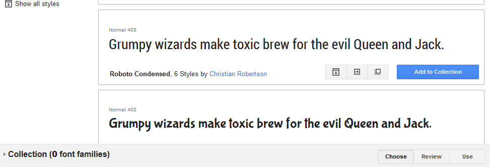
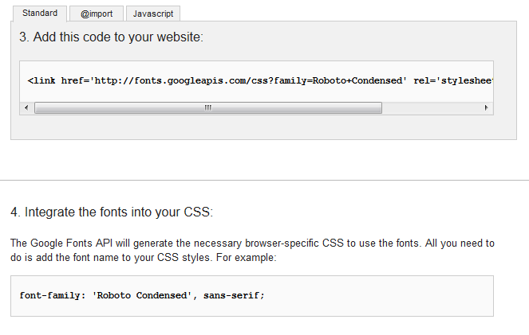
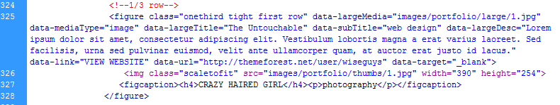

Thank you for purchasing our template. If you have any questions that are beyond the scope of this help file, please feel free to email me via the contact form on our envato profile page. Thanks so much!
Note that the forms and social sharing widgets work using PHP and therefore will not work locally but only when uploaded to your server.
This template is coded so you can set each of the component to any of the following proportions of the template which is itself based on a 960px width:
All the colors are set at the bottom of the screen.css file located in the css folder. There you will find the various colors for every elements, as well as the hightlight color (currently #129078)
The quickest way to change the highlight for the whole template is to use the Find and Replace tool available in most text editors. Open the screen.css in your favourite text editor, hit CTRL+F on your keyboard (CMD+F on Mac), in the Find field add the current hightlight hexadecimal color as currently set in the file (#129078), in the Replace field input your new hexadecimal color and hit Replace All, your highlight color should now be updated.
By default the background image is located in /images/background/1.jpg, the quickest way to change it is to simply overwrite the current one with your own with same name/extension. If you wish to change the name/location/extension, the path to that image is set in the index.html file on line 55 in the data-backgroundImage attribute like so:
section class="wrapper" data-backgroundImage="images/background/1.jpg"
This templates uses several icons all over the page, those are icons from the Font awesome library. The icons used in the template are set in the screen.css from line 232 and look like this:
.faIcon.desktop:before { content: '\f108'; }
If you wish to use diferent icons, go to the Font awesome icons library and when you find one you want to use, click it and on the following page locate the unicode. You can now either overwrite an existing unicode in my css, or create your own entry by copying/pasting one entry as shown above, change the class name (desktop in above example)and update the index.html, font awesome icons look like this:
span class="faIcon portfolio"
Additionally you can add the class "small" or "tiny" to change the icon size. Icons are white by default but you can add the class "dark" to make them dark instead, like this:
span class="faIcon portfolio small dark"
You can change the top image in index.html on line 84 like so:
img class="scaletofit" src="images/home/1.jpg" alt=""
You can update the links for the social icons right below the top image in index.html by updating the href attribute of the anchor tag.
li class="linkedin" a class="tooltip" data-tooltipText="LinkedIn" data-tooltipDirection="s" target="_blank" href="http://themeforest.net/user/LGLab"
If you wish to change or add other social icons, note that the icons themselves are from fontwaesome, and all the available icons are set in the screen.css from line 593 like so:
.socialIcons li.linkedin a:before { content: '\f0e1';}
Locate the one you wish to use and update the class name of the li tag in the index.html according to the css.
There are a number of parameters you can set for the progress circles, currently in the about page from line 184 as shown below.
div class="arc" data-percent="78" data-sign="%" data-size="106" data-fontSize="40" data-stokewidth="10" data-strokeColor="#000000" data-circleColor="#f1d96a" data-textColor="#000000"
Parameters explained:
This template uses google fonts, you may browse all google fonts on their site here: http://www.google.com/fonts/. To choose a new font, click on the Add to Collection button on the google fonts website and then the Use button, as shown in image below:

On the following page, copy the link in the Add this code to your website section, and paste it in the index.html before any other css files around line 24, you can see our default font there already like so:
Fonts are set in the base.css and screen.css, currently Droid Sans and Oswald (for headings). To start using your new font, first look at the Integrate the fonts into your CSS section on the google use page as shown below, copy the font name only, and overwrite whichever current font you want to change, you may locate any of the above default fonts in the css files by using the Find tool in your favourite text editor (CTRL+F on your keyboard).

To add your email address to the contact form, open the contact.php file located in the classes folder, update the email address on line 14 as seen below and save the file. If you are having problems receiving emails from your contact form, then please first contact your hosting provider as they will usually be in the best position to tell you what is wrong and in most cases fix it for you. The form uses the Mail() function so your server must support it as well as having PHP enabled.
$address = "name@domain.com";
There are several other configuration options in contact.php such as the formatting of the email itself and error messages, these are highlighted and described, but make sure to keep a working back up of this file before attempting any modifications.
You can change your twitter username as well as the number of tweets to show in vitae.js file located in the js folder on line 463 within the initTweets function.
var twitter = $(".tweets").tweet({
join_text: "auto",
username: "LGLab",
avatar_size: 48,
count: 3,
auto_join_text_default: "",
auto_join_text_ed: "",
auto_join_text_ing: "",
auto_join_text_reply: "",
auto_join_text_url: "",
loading_text: "loading tweets..."
});
Note that twitter recently made changes to their API, and the twitter feed should work without any further changes, however if your twitter feed does not work, follow the instructions on this page. Note that all the files required are already included in your download, all you would need to do is create a twitter app and add your secret keys in the index.php inside the twitter folder.
Each portfolio item is defined within the figure tag as shown in image below. The current example uses the onethird size but you can set it to onefourth and onefifth as well, the only requirement is that first item in a row must have the first class added to the figure tag, and also thumbnail images must be at least 390px wide as they are shown at their full size on mobile devices.

Parameters explained:
Note: You do not need to do anything about the below comments if you have purchased the template after these dates.
Note: To minimize disruption with your current website, all css updates will be added to the bottom of the screen.css from line 2995, so everytime you make an update, simply copy/paste that updates section of the screen.css file into yours at the same place. For updates into other files, they will be listed below.